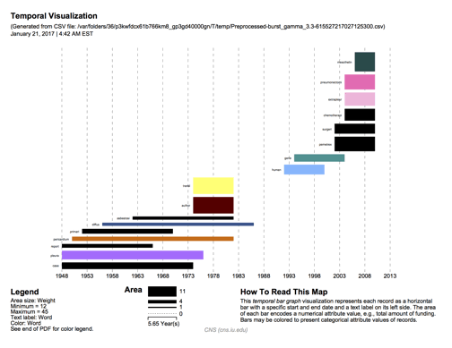
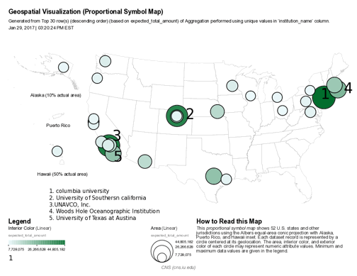
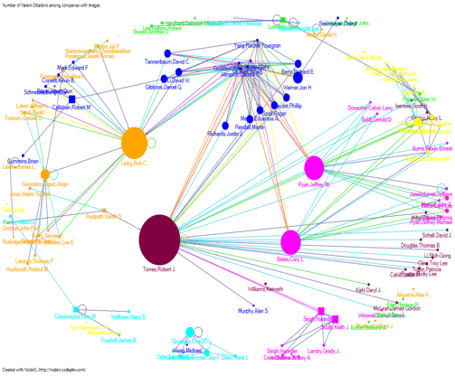
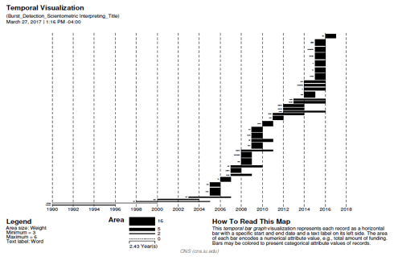
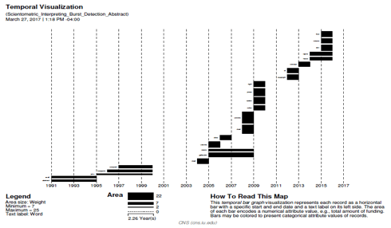

Scientometric Mapping of Interpreting
Evolution of topics, authors and collaboration’s over time and space
Chandan Uppuluri
Indiana University
Nisha Chadwani
Indiana University
Vinay Kumar Ranganath
Babu
Indiana University
Shruthi Ramakrishnan
Indiana University
Abstract:
Interpreting is the domain of translating speech or signs from one language to another [1]. Although science mapping is relatively established in other domains, the field of “interpreting” has not looked at itself from a Scientometric perspective. The project is a first step toward gaining first insights into this academic field by analyzing the academic articles published in the main journal in the field, Interpreting, using Scientometric analysis methods and information visualization.
Description and
Goals:
The client needs visualizations that gives insights about “domain of interpreting” by analyzing the articles that have been published related to this domain. We will be creating visualizations which gives insights about the evolution of topics, authors, collaborations and citations across time (when) and space (where: geo-spatial). Listed below are the various visualization we would be implementing for this project:
1.) Topic Analysis – Word Cloud:
The goal is to create a chart in the form of a world cloud. We will overlay topics data. Here is an example visualization:
Figure 1: Word cloud example [2]
2.) Topic Analysis: Burst of terms across time
In this visualization, we can see the burst of topics in the domain of interpreting across time. Below is an example visualization:

3.) Geospatial Location of Lead Authors:
The reference system will be a world map or any other map. We will be using proportional symbol map to overlay the data of number of authors that have contributed towards the domain of interpreting. An example proportional symbol map would look something like this: ( It shows the universities that receive the most amount of funding. And size of the symbol is proportional to the amount of funding. In our case this will be the number of authors that have contributed from that university or the location of lead authors i.e the authors who have contributed the most.)

4.) Paper Citation Network:
The reference system that will be used here is a network graph that shows the citations network of the authors. This depends on the dataset that we have and how much information it holds as the dataset is still tentative and not yet finalized. But here is an example of Patent Citation network of Computer Graphics Processing Group [3]

5.) GeoSpatial location of topics across time:
This uses world map or Country maps as a reference system. We will overlay lead topics that have evolved at various locations across the world. We can also include one more factor which is the time. We can produce series of maps for various time frames.
Interactive
Visualizations:
Though client is looking just for visualization’s that just gives insights, a better visualization would always be the one with which we can interact. We can use the Shiny web app with plotly/ D3 or any other program for this purpose to implement interactive visualizations.
Various levels of interactions can be as follows:
1.) Time Toggle affect: With this we can select the time / year to see how the topics/authors have evolved during the particular time frame.
2.) Filters: Using filters we should be able to sub select authors, Countries, Topics etc
3.) Data Overlay: Based on the time/Filters used the appropriate data must be overlaid.
Related Work:
There is not much of a work done in the Scientometric analysis of the interpreting studies domain.
But we have found very few works related to this . In Xu and Pekelis_Chinese Interpreting Studies A Data Driven Analysis_Peerj 2015 paper [5] it discusses about how we can identify various trends in the interpreting studies using quantitative and qualitative analysis. But this study focusses on mainly the Chinese works. Doors and Gambier Measuring relationships in Translation Studies Perspectives 2015 [6], in this study they mainly focus on the geographical spread of the Translation and Interpreting Research using Affiliations.
About the Data
(Statistics and Attributes):
The required data for this project is obtained from the Scopus database. It has research papers related to various domains including the field of interpreting.
The search query is as follows: "interpreting studies" OR "conference interpreting" OR "court interpreting" OR "medical interpreting" OR "sign language interpreting" OR "community interpreting" OR "simultaneous interpretation" OR "consecutive interpretation".
The dataset has 2932 records in them. Which suggests that there are 2932 records of different papers/articles related to Scientometric Interpreting. But it has a lot of noise. It Should be filtered to exclude publications related to statistics, remove non-articles such as books etc. The main attributes in the dataset which are relevant and interesting for our analysis were the below ones:
For the geo-spatial mapping, we can use the Affiliation’s filed.
It has the university location address. This address can be used for geocoding
to obtain the latitude and longitude which can then be used for spatial
mapping.
Data analysis/visualization (algorithms) applied and
resulting visualizations:
We decided to perform 'Burst Detection' on two different fields namely 'Title' and 'Abstract' to understand on which topics/areas, the publications concentrated on. And finally, to create a temporal bar graph to visualize the burst detection over time.
Following are the steps which were carried out in executing 'Burst Detection':
·
Load
the data into Sci2 in 'Standard csv format'. The dataset loads and appears in
Sci2's data manager
·
Right
click on the data and click on 'view' to check the right data have been loaded.
We can also explore different fields of our data by doing so
·
Since
we want to perform Temporal Analysis via 'Burst Detection' and to visualize it
via Temporal bar graph, our main concentration is on the fields Title, Abstract
and Year
·
The
first and foremost step in our analysis to perform 'Burst Detection' is to
normalize the 'Title' field. This will first lowercase the words, break the
words into tokens, stem the words and remove all the stop words. This process
will make sure that the 'Burst Detection' algorithm runs effectively
·
In
Sci2, click on the dataset and go to Preprocessing -> Topical ->
Lowercase, Tokenize, Stem, and Stop word Text. Since we are interested in
normalizing the 'Title' field, we need to select that and click on 'Ok'. The
algorithm runs successfully and the 'Title' field gets normalized. We can
cross-check this by viewing the file again
·
After
this pre-processing, the next step is to run the 'Burst Detection' on the
normalized 'Title'. To do this, click on the normalized file, go to Analysis
-> Topical -> Burst Detection. We need to input the below parameters.
Keep rest of them to its default.
Data Column - Year
Text Column - Title
Click on Ok.
·
When we right click, and view our modified
dataset, we could see the word column which gives us all the bursting words
from Titles. We also have burst Weight and, the Start date and End date for the
burst. Many of the End date columns were empty which suggested that those words
were still bursting. However, as we knew that the publications/papers till
2016, all the missing rows were imputed with '2016'
·
Save the file with csv format
·
Reload the saved file back to Sci2 with
standard csv format. This new file would be used to create the temporal bar
graph
·
Select the file and go to Visualization ->
temporal -> Temporal Bar Graph and input the below parameters
Subtitle - Scientometric Interpreting
Label - Word
Start Date - Start
End Date - End
Size By - Weight
Scale Output - Checked
Click 'Ok'.
·
The
Temporal Bar Graph would be created in the Data Manager. The next step is to
save this file as a 'PostScript' file and convert it into pdf
Perform the same steps for 'Burst Detection' on Abstract field. Below are the visualizations for the same.

Figure 2 Genrated from title

Figure 3 Generated from abstract
2. Word Cloud:
1. Load the csv file onto Sci2 and perform preprocessing on that
preprocessing -->topical --> lowercase, tokenize, stem and stopword text based on title
2. Load the resulting file to excel. select the title column and split the words based on spaces. Find the frequency of each word.
3. Load the words and frequencies into Tableau.
4. Drag the words to Text and Frequencies to Size
5. Select words with frequency above 30
6. Drag the words to color
The word cloud visualization is created
Repeat the same process on the abstract column.
Figure 4 Generated from Title
Figure 5 Generated from Abstract
Insights
· We preprocessed the original dataset by filtering out the records specific to the domain interpreting, cleaned the data set by removing nulls etc. But we still observe some noise in the results found as per the visualizations.
· Words like healthcar, servic, patient may not be related to our domain. We still need to look into the dataset to and try removing the unrelated terms.
· In the Temporal Visualization, we can see many bars. Each of the bars are associated with one of the bursting words. We can see these bursting words from 1990 to 2016. We can also see the difference in the weights for each burst term and can check how the topics/areas in Scientometric Interpreting evolved over time.
· Initially the algorithm did not filter away few things like years and single alphabets and these appeared as noise in our processed data as bursting terms. These had to be removed before creating the temporal graph.
· In the Title Temporal graph, we can see terms bursting like 'educ', 'studi', 'mediat', 'percept' and so on which emerged over time.
· In the Abstract Temporal graph, we can see terms bursting like 'gallaudet', 'univers', 'deaf' etc. which emerged over time.
· top 10 words for title: (from word cloud of title)
o interpret 2,256
o languag 368
o use 224
o studi 208
o sign 183
o patient 167
o commun 163
o simultan 157
o translat 156
o la 152
· top 10 for abstract: (from word cloud of abstract)
o interpret 9,386
o use 2,830
o languag 2,610
o studi 2,103
o commun 1,547
o patient 1,524
o result 1,259
o provid 1,180
o court 1,088
o differ 1,079
Discussion of
challenges and opportunities:
1.) The major challenge is to obtain a clean data set as there is a lot of possible noise. But by refining query terms in Scopus database we can obtain a better dataset.
2.) Another challenge is to implement an interactive visualization’s. Using appropriate tools such as shiny web app/plotly/D3 etc should help us build interactive visualizations easily.
Acknowledgements:
Lluís Baixauli-Olmos, Assist. Prof., Dept. of Classical and
Modern Languages at the university of Louisville has helped with us in
understanding the scope of the project and any other queries that we had. We
have worked with LLuis closely to obtain the
necessary dataset from the Scopus database.
References:
[1] Interpretation or Interpreting wikipedia : https://en.wikipedia.org/wiki/Language_interpretation
[2] World Cloud example image: http://www.jsquaredanalytics.com/word-clouds/
[3] Citation Network wiki: https://wiki.cs.umd.edu/cmsc734_11/index.php?title=File:Citation_IBm.png
[4] Sci2 Team. (2009). Science of Science (Sci2) Tool. Indiana University and SciTech Strategies, http://sci2.cns.iu.edu.
[5] In Xu and Pekelis_Chinese Interpreting Studies A Data Driven Analysis_Peerj 2015
[6] Doors and Gambier_Measuring relationships in Translation Studies_Perspectives 2015.
{kind=link}